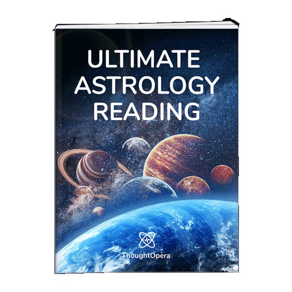
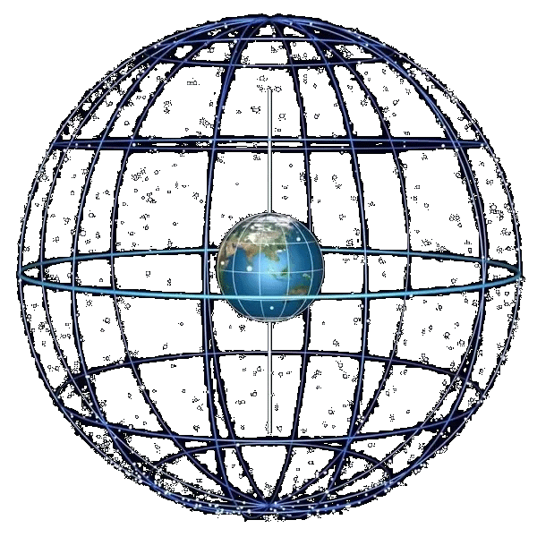
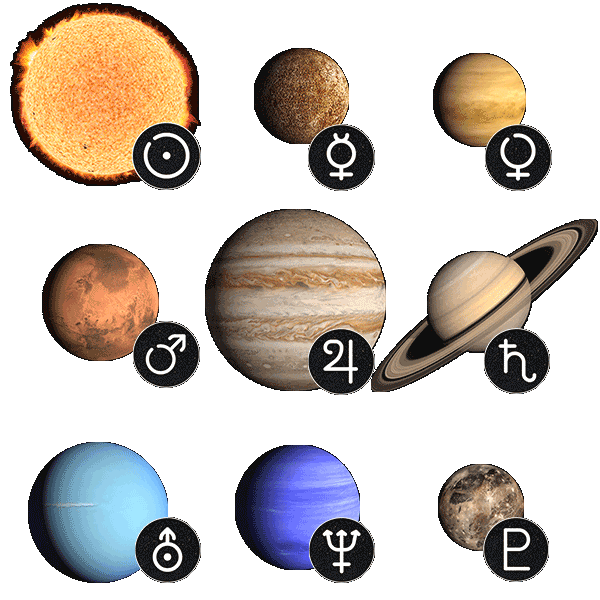
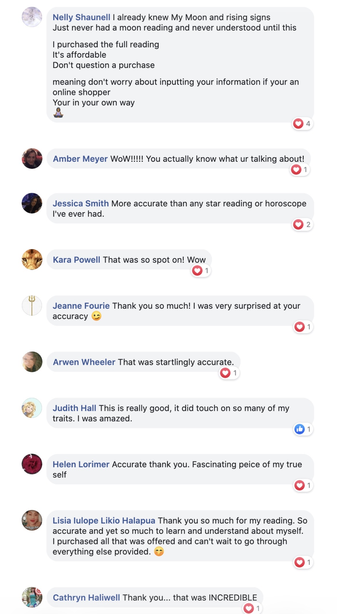
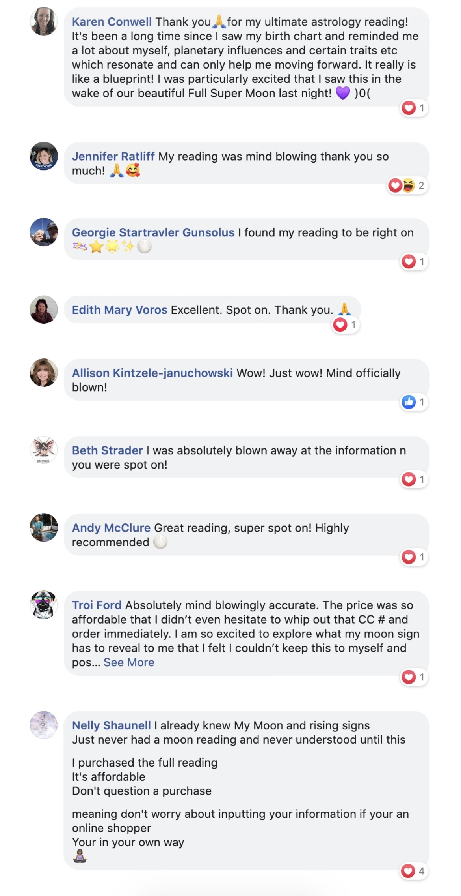
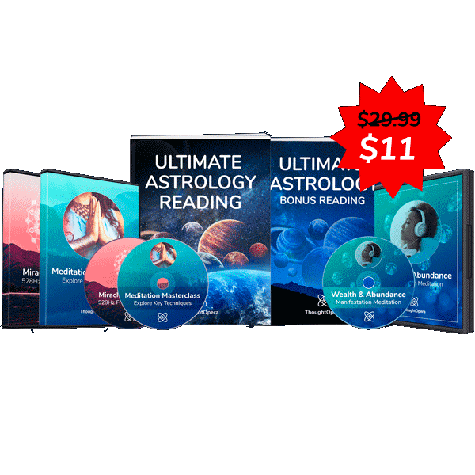

Personalized Moon Reading Online for US Visitors: Discover Your Moon Sign, Birth Chart, and Astrology Report

Moon Reading is a personalized astrology reading made for people in the United States who want deeper insight into their emotions, relationships, hidden strengths, moon sign, birth chart themes, and personal direction.
Instead of giving you a basic horoscope, Moon Reading creates a custom digital experience using your birth details and lunar profile. It is designed to help you understand why you feel, choose, love, and react the way you do.
⌛ Limited-Time Discount: Normal price $29, now available for only $11.
Why So Many People Are Curious About Moon Reading
Moon Reading gives visitors a more personal way to explore astrology. The official partner materials describe it as a fully personalized video reading created to reveal astrological insights based on each person’s unique details.
Feel Like There Is More to Your Story?

Understand Your Emotions
Your moon sign is often linked with your inner world, moods, instincts, and emotional needs.
Explore Life Patterns
The reading can help you reflect on repeating patterns in love, confidence, purpose, and decision-making.
Get a Personal Experience
Moon Reading is not a generic daily horoscope. It is built around your birth details and personal astrology profile.
Personalized Moon Reading for a US Audience
This Moonereading guide is written for people in the USA who are searching for a simple online astrology reading, free moon reading preview, moon sign meaning, moon phase reading, or a personalized astrology report based on birth date.
Whether you are interested in love, career, emotional patterns, self-discovery, manifestation, or spiritual growth, a personalized moon reading can help you reflect on your birth chart and lunar astrology profile in an easy-to-understand way.
Common searches like moon reading USA, personalized astrology reading USA, moon sign reading online, and birth chart reading online all point to the same idea: people want guidance that feels more personal than a basic daily horoscope.
What is Moon Reading?
Moon Reading is a digital astrology and self-reflection experience that creates a personalized reading based on your birth information. It focuses strongly on the moon’s influence, your zodiac profile, and the deeper emotional themes connected with your chart.
Many people read daily horoscopes and feel they are too general. Moon Reading is different because it aims to make the message feel more specific to you. It can be useful if you enjoy astrology, spiritual guidance, journaling, manifestation, or personal growth content.
The goal is simple: help you see yourself from a new angle and decide what areas of your life may need more attention, patience, confidence, or clarity.
How Does Moon Reading Work?
Moon Reading starts with your birth details. From there, the system creates a personalized digital astrology reading that may include moon sign insights, zodiac themes, planetary influences, emotional patterns, and life-direction guidance.
The experience is made to be easy to follow. You do not need to be an astrology expert. The reading explains the ideas in a clear way so you can reflect on what connects with your own life.
Astrology is a spiritual and interpretive practice, so results and personal meaning can vary. Use Moon Reading as a reflection tool, not as a replacement for professional, financial, medical, or mental health advice.
What You May Discover Inside Your Moon Reading

Your personalized Moon Reading may help you explore the hidden parts of your astrology profile in a simple, visual, and easy-to-understand format.
- Your Moon Sign Meaning: Learn how your moon sign may connect with your emotions, instincts, and inner needs.
- Birth Chart Themes: Explore personality patterns connected with your unique birth information.
- Relationship Insights: Reflect on how you give love, receive love, and respond emotionally in close connections.
- Life Path Clarity: Discover themes that may point toward your strengths, challenges, and personal growth areas.
- Planetary Influence: Understand how different astrological placements may shape your timing, choices, and perspective.
Benefits of Moon Reading
- Personalized astrology reading instead of a one-size-fits-all horoscope.
- Easy digital access from the official offer page.
- Helpful for people interested in self-discovery, spirituality, and emotional reflection.
- May give you a fresh perspective on love, confidence, purpose, and personal timing.
- Simple explanations that are beginner-friendly, even if you are new to astrology.
- Can be used for journaling, meditation, manifestation, and personal goal setting.
Real Users, Real Feedback
Many Moon Reading users share feedback about how personal, accurate, and interesting their readings felt. These comments help new visitors understand why people are curious about trying Moon Reading for themselves.


Individual experiences can vary. Use Moon Reading as a personal astrology and self-reflection experience.
How to Get Your Moon Reading
To get started, visit the official Moon Reading page through the button below. You will be guided through the next steps and can enter your details directly on the official website.
If you are not fully sure yet, you can first take the free trial on the official website. Attend the free trial, see how the Moon Reading experience feels, and then decide whether you want to buy or not.
Limited-time discount: the normal price is $29, but right now you can get it for only $11. Because pricing, bonuses, and availability can change, always check the official page for the latest offer before ordering.
Limited-Time Discount: $29 Normal Price — Now Only $11
Will Moon Reading Work for Me?
If you enjoy astrology, moon signs, spiritual self-discovery, or personality-based guidance, Moon Reading may feel interesting and meaningful. The best fit is someone who is open to reflection and wants a more personal experience than a standard horoscope.
It is important to remember that astrology is personal and interpretive. Some people may feel a strong connection with the reading, while others may use it mainly for curiosity, journaling, or entertainment.
Are There Any Side Effects?
Moon Reading is a digital astrology reading, not a physical product. There are no ingredients to consume. The main thing to keep in mind is that spiritual content can sometimes bring up emotional reflection.
Use the reading as a guide for self-awareness, not as a strict rulebook for your future. For serious life, health, legal, or money decisions, speak with a qualified professional.
Pros and Cons
Pros
- Personalized astrology experience.
- Beginner-friendly and easy to access online.
- Focuses on moon sign, emotions, and deeper self-reflection.
- Useful for people who enjoy spiritual growth and astrology.
Cons
- Not for people who dislike astrology or spiritual content.
- Personal meaning can vary from person to person.
- It should not replace professional advice for major decisions.
Where to Buy Moon Reading?

Moon Reading should be accessed through the official offer page so you can see the latest details, pricing, bonuses, and availability.
Conclusion - Is Moon Reading Worth Trying?
Moon Reading is worth considering if you want a personalized astrology experience that goes deeper than a basic horoscope. It is made for people who are curious about their emotional patterns, relationships, timing, and personal direction.
The strongest hook is simple: if you have ever felt there is a hidden reason behind your emotions, choices, or relationship patterns, your moon sign may give you a new way to understand yourself.
Ready to See What Your Moon Sign May Reveal?